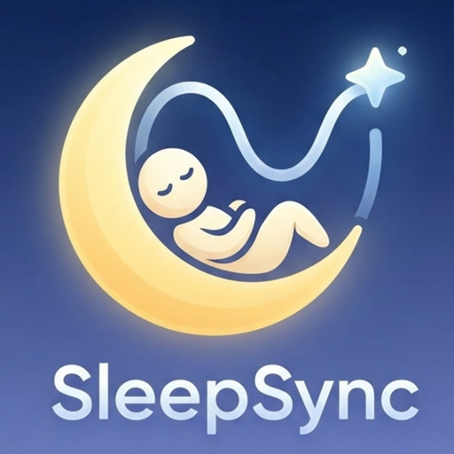
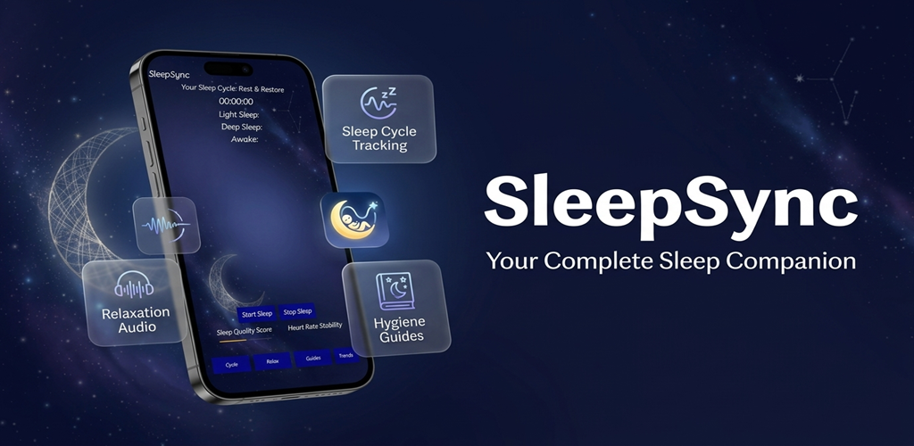
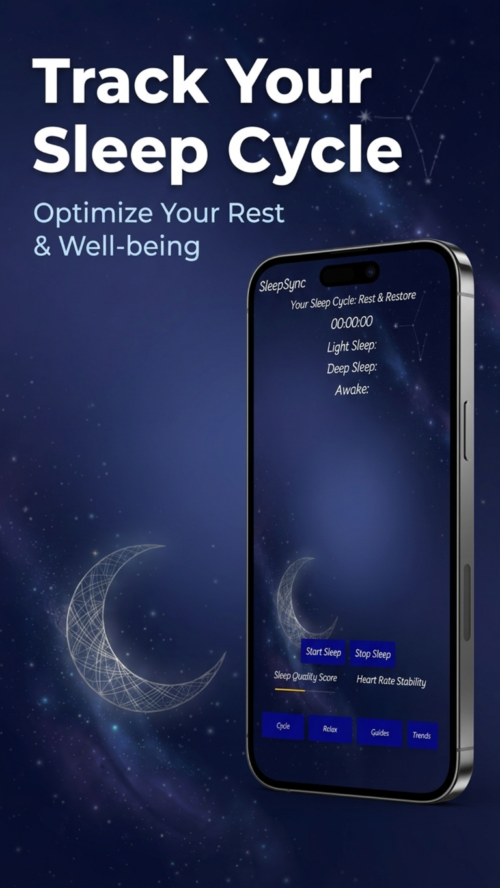
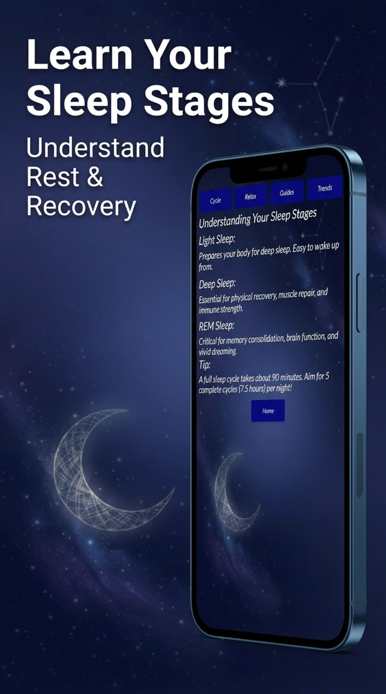
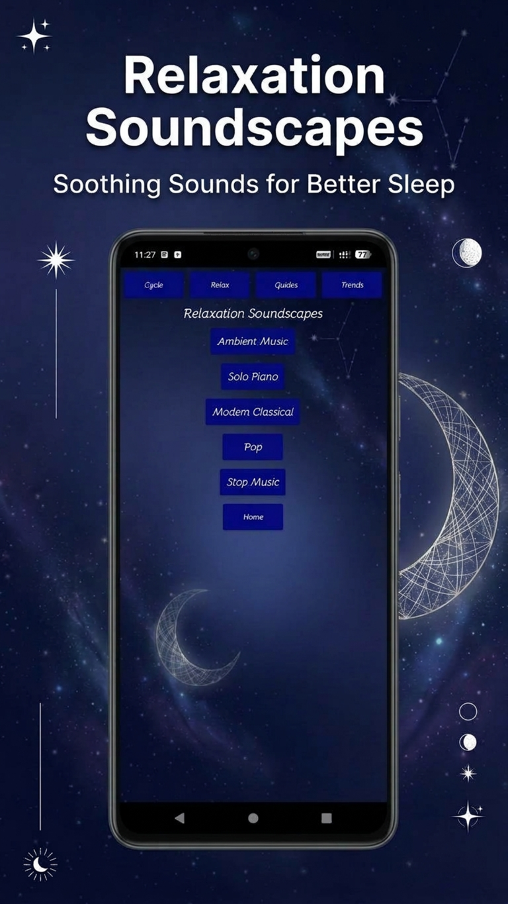
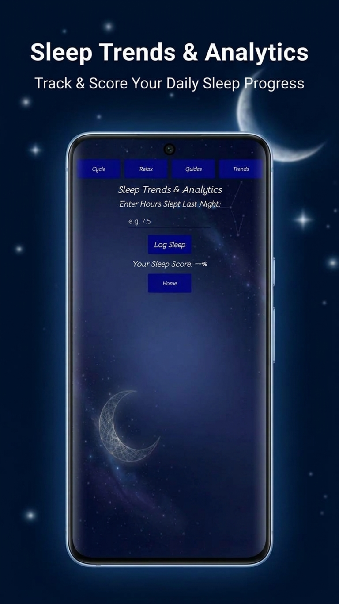
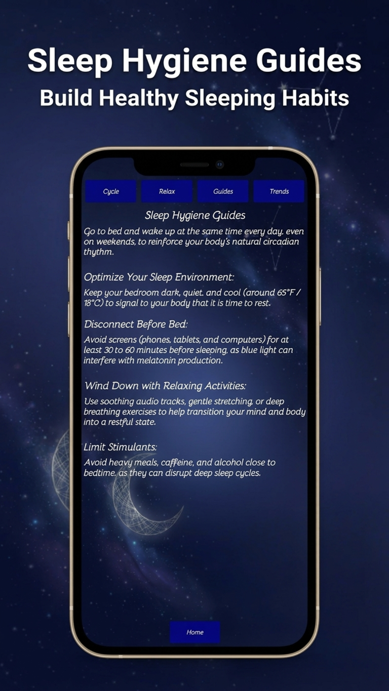

Short Description
SleepSync helps you wind down with a sleep timer, calming sounds, sleep education, and simple tools to reflect on your sleep habits.
Sleep stages are shown for reference and are not measured by this website.
Log sleep duration in Trends to see an estimate.
Heart-rate tracking is not available on this website.
ABOUT SLEEPSYNC
SleepSync brings sleep-cycle tracking, relaxation audio, and hygiene guides together to help you wind down and learn about healthier sleep habits.
SleepSync helps you wind down with a sleep timer, calming sounds, sleep education, and simple tools to reflect on your sleep habits.
SleepSync is a sleep wellness companion designed to support a calmer bedtime routine and help you learn about healthy sleep habits. Use the sleep timer to record a session, explore educational information about Light, Deep, and REM sleep, listen to relaxing soundscapes, and browse practical sleep-hygiene guides. The Trends view lets you review the sleep-duration entries you record, while the homepage provides an estimated sleep quality score based on logged duration.
Whether you are building a more consistent bedtime routine or simply curious about your sleep habits, SleepSync brings useful sleep tools and information together in one place. Your sleep entries are stored in your browser on this device.
SleepSync does not measure sleep stages or heart rate. Its estimates and educational content are for general wellness and are not medical advice.
MEET SLEEPSYNC


Your sleep entries stay in your browser. SleepSync is a general wellness tool, not a medical device.
Take a closer look at the tools and information available in SleepSync.

Sleep stagesLearn about Light, Deep, and REM sleep.
Relaxation audioChoose a calming soundscape for your bedtime routine.
Sleep trendsReview logged sleep durations and summaries.
Sleep guidesBrowse practical tips for a calmer bedtime.
Prepares your body for deep sleep. Easy to wake up from.
Essential for physical recovery, muscle repair, and immune strength.
Critical for memory consolidation, brain function, and vivid dreaming.
A MOMENT TO UNWIND
Choose a soft, locally generated tone to ease into a quieter moment. Start audio only when you’re ready.
NOW PLAYING
Nothing playing
Sounds are created in your browser. No audio is recorded or sent anywhere.
SMALL HABITS, SOFTER NIGHTS
Simple ideas to help make your sleep environment and bedtime routine feel more restful.
Try going to bed and waking up around the same time each day, weekends included. A consistent routine can support your body's natural sleep-wake rhythm.
Keep your room dark, quiet, and comfortably cool. A restful environment can help signal that it’s time to wind down.
If it feels right for you, put devices aside for a while before bed and choose a quieter activity instead.
Gentle stretching, slow breathing, or soothing sounds can help you shift from a busy day toward a calmer bedtime.
Caffeine, alcohol, large meals, and late-day naps affect people differently. Notice your own patterns and adjust what works for you.
These ideas are for general wellbeing, not medical advice. If sleep troubles are persistent or affecting your daily life, consider speaking with a healthcare professional.
YOUR NIGHTS, AT A GLANCE
Log how long you slept and look for patterns over time. Your entries stay on this device.
A NEW ENTRY
RECENT SLEEP
YOUR JOURNAL
Your logged nights will appear here. Add your first entry above.